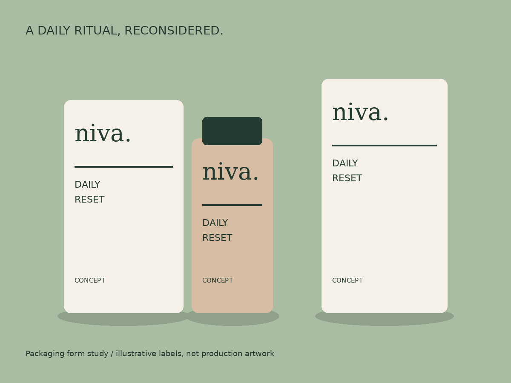
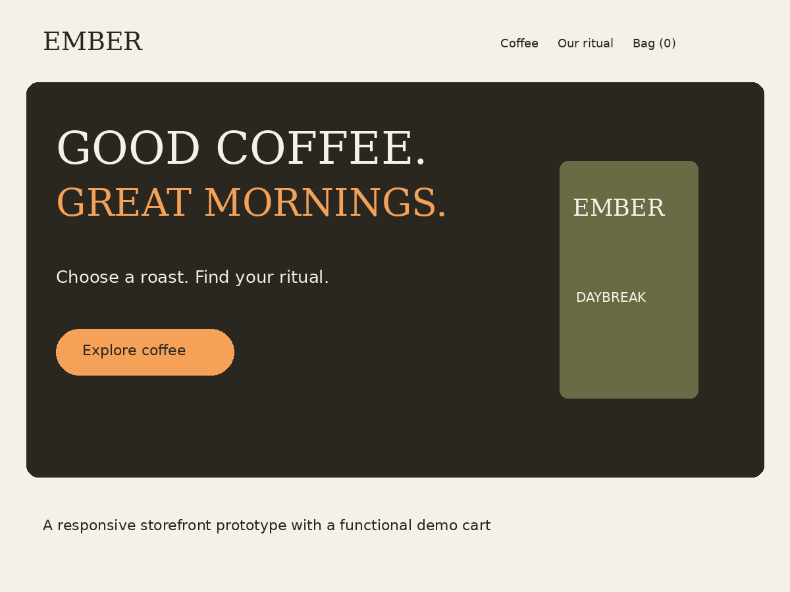

01 / Brand identity + packaging
NIVA
A quiet skincare identity built around one clear daily ritual.
Explore case study →Three explorations in identity, digital commerce and campaign design. From the first visual idea to a working digital experience.

A quiet skincare identity built around one clear daily ritual.
Explore case study →
An editorial coffee storefront that makes the first choice easier.
Explore case study →
A punchy snack launch system that holds together across a feed and a reel.
Explore case study →Each case study connects a visual system to an audience hypothesis, a business objective and an execution plan. The assets are editable and the assumptions are visible.
These are fictional, self-initiated projects prepared for a visual design internship application. They demonstrate concept development and implementation; they do not represent paid client engagements.
Get the application PDF